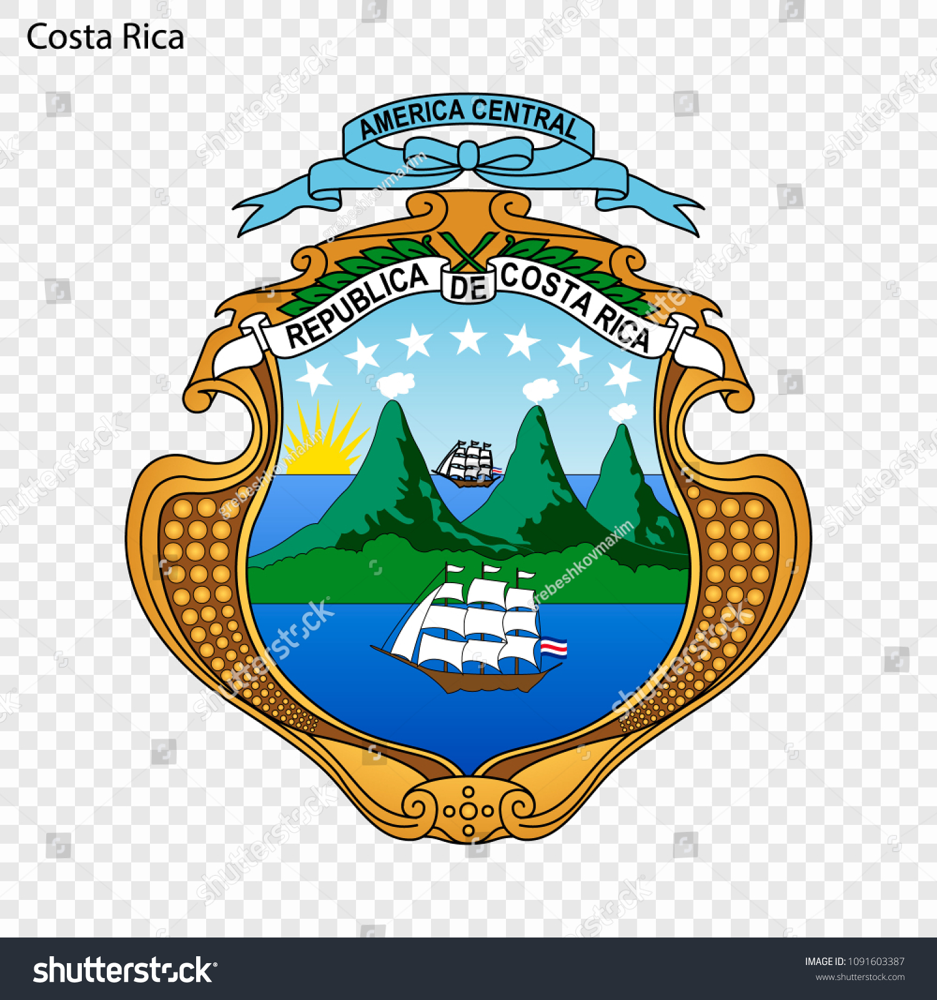
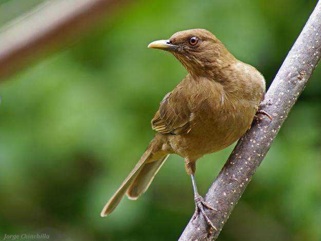

Simbolos Patrios
Bandera Nacional

Escudo
Ave
Arbol

Flor

Costa Rica, ubicada en América Central, tiene una historia marcada por su estabilidad y desarrollo en comparación con otros países de la región. Antes de la llegada de los europeos, la región estaba habitada por diversas culturas indígenas. Cristóbal Colón llegó a las costas de Costa Rica en 1502 durante su cuarto viaje, y la región fue colonizada por los españoles en el siglo XVI. Costa Rica se convirtió en parte del Virreinato de Nueva España, aunque su lejanía y terreno montañoso limitaron el interés español en la región. En 1821, Costa Rica obtuvo su independencia de España, junto con el resto de Centroamérica. A lo largo del siglo XIX y XX, Costa Rica experimentó una serie de reformas políticas y sociales que sentaron las bases de su actual democracia. A partir de 1948, Costa Rica abolió su ejército, lo que ha contribuido a su estabilidad y enfoque en la educación y la salud pública.
Costa Rica tiene una extensión territorial de aproximadamente 51.100 kilómetros cuadrados. Su territorio es mayormente montañoso, con cordilleras que recorren el país de norte a sur, y extensas llanuras costeras en el Pacífico y en el Caribe.
Costa Rica es un destino turístico muy popular gracias a su rica biodiversidad, sus parques nacionales y sus hermosas playas. Algunos de los destinos más importantes incluyen: